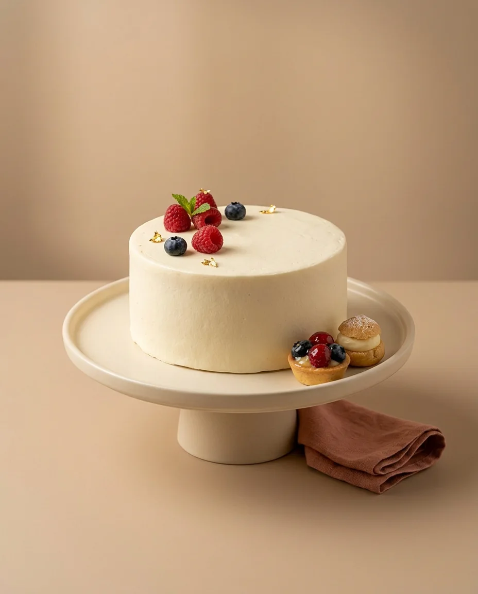

· Maron Blog
Μιχάλης, Άγγελος, Γαβριήλ: τα γλυκά της γιορτής των Ταξιαρχών

Στις 8 Νοεμβρίου η Εκκλησία τιμά τη Σύναξη των Αρχαγγέλων Μιχαήλ και Γαβριήλ, των Ταξιαρχών. Είναι από τις πιο «γεμάτες» ονομαστικές γιορτές του φθινοπώρου: γιορτάζουν Μιχάλης και Μιχαέλα, Γαβριήλ και Γαβριέλα, Άγγελος, Αγγελική και Αγγελίνα, Ταξιάρχης και Ταξιαρχούλα. Σχεδόν σε κάθε παρέα, σε κάθε γραφείο και σε κάθε οικογένεια υπάρχει κάποιος που γιορτάζει.
Και όπου υπάρχει γιορτή, υπάρχει και η γνωστή ερώτηση: τι γλυκό να πάρω; Μερικές ιδέες, ανάλογα με το πού και με ποιους θα το μοιραστείτε.
Για το «ανοιχτό σπίτι»
Σε πολλά σπίτια η ονομαστική γιορτή είναι ακόμη μέρα για επισκέψεις. Οι φίλοι περνούν το απόγευμα, κάθονται λίγο, φεύγουν και έρχονται άλλοι. Σε αυτή την περίπτωση δουλεύουν καλύτερα τα γλυκά που σερβίρονται εύκολα σε μικρές μερίδες και δεν χρειάζονται μαχαίρι και πιάτο για κάθε καλεσμένο.
- Ένας δίσκος με ποικιλία από πάστες, ώστε ο καθένας να διαλέξει τη γεύση του.
- Μικρά κεράσματα και μπισκότα για τον καφέ, που μένουν φρέσκα όλο το απόγευμα.
- Ένα ταψάκι με σιροπιαστό ή σοκολατένιο γλυκό, για όσους προτιμούν τις κλασικές γεύσεις.
Στη βιτρίνα μας θα βρείτε <a href="katigoria.html#pastes">πάστες</a>, <a href="katigoria.html#kerasmata">κεράσματα</a> και <a href="katigoria.html#tapsakia">ταψάκια</a> που ταιριάζουν ακριβώς σε αυτό το είδος της γιορτής.
Για το οικογενειακό τραπέζι
Όταν η γιορτή γίνεται γύρω από ένα τραπέζι, το γλυκό γίνεται το κλείσιμο του γεύματος και αξίζει να είναι μία τούρτα. Δεν χρειάζεται να είναι εντυπωσιακή σαν τούρτα γενεθλίων· μια κλασική γεύση, όπως σοκολατίνα, φράουλα ή προφιτερόλ, είναι συνήθως η πιο ασφαλής επιλογή για όλες τις ηλικίες. Ρίξτε μια ματιά στις <a href="katigoria.html#glyka-tourtes">τούρτες ημέρας</a> μας για τις αγαπημένες γεύσεις της βιτρίνας.
Ένα μικρό μυστικό
Αν ξέρετε τη γεύση που αγαπά ο εορτάζων, ξεκινήστε από εκεί. Ένα γλυκό που δείχνει ότι θυμηθήκατε τι του αρέσει λέει πολύ περισσότερα από το πιο περίτεχνο κουτί.
Για το γραφείο
Η γιορτή στη δουλειά έχει τους δικούς της κανόνες: λίγος χρόνος, πολλά άτομα, συνήθως όρθιοι γύρω από ένα γραφείο. Εδώ κερδίζουν τα γλυκά που μοιράζονται χωρίς κόπο. Τα μπισκότα, τα μικρά κεράσματα και τα cupcakes σερβίρονται στο χέρι, δεν λερώνουν και φτάνουν για όλους. Αν θέλετε να κάνετε την έκπληξη πιο προσωπική, ένα <a href="katigoria.html#cupcakes">cupcake</a> ή ένα <a href="katigoria.html#mpiskota">μπισκότο</a> με το όνομα του εορτάζοντα είναι μια μικρή λεπτομέρεια που θυμάται κανείς.
Για τους μικρούς Μιχάληδες και τις μικρές Αγγελικές
Για τα παιδιά η ονομαστική γιορτή είναι, ουσιαστικά, ένα δεύτερο πάρτι μέσα στη χρονιά. Μια μικρή τούρτα με τον αγαπημένο τους ήρωα ή με τα χρώματα που αγαπούν κάνει τη μέρα ξεχωριστή, ακόμη κι αν η γιορτή είναι απλή. Οι <a href="katigoria.html#paidikes">παιδικές μας τούρτες</a> σας δίνουν εκατοντάδες ιδέες για να ξεκινήσετε.
Πόσο γλυκό χρειάζεστε;
Η πιο συχνή αγωνία πριν από μια γιορτή είναι μήπως δεν φτάσει το γλυκό. Ένας πρακτικός τρόπος να το υπολογίσετε είναι να σκεφτείτε όχι πόσοι θα έρθουν συνολικά, αλλά πόσοι θα βρίσκονται στο σπίτι ταυτόχρονα. Σε ένα ανοιχτό σπίτι οι επισκέψεις μοιράζονται σε όλη τη μέρα, οπότε μια ποικιλία που ανανεώνεται είναι προτιμότερη από ένα μεγάλο γλυκό που κόβεται μία φορά.
- Για λίγους, στενούς φίλους: μια τούρτα ή ένας μικρός δίσκος με πάστες είναι αρκετός.
- Για πολλές επισκέψεις μέσα στη μέρα: μοιράστε το γλυκό σε δύο δίσκους και βγάλτε τον δεύτερο το απόγευμα, ώστε να είναι φρέσκος.
- Για το γραφείο: υπολογίστε ένα κέρασμα για κάθε συνάδελφο και λίγα επιπλέον για όσους περάσουν να ευχηθούν.
Και αν είστε καλεσμένοι;
Αν πηγαίνετε εσείς σε κάποιον που γιορτάζει, ένα μικρό κουτί με πάστες ή μπισκότα είναι πάντα ευπρόσδεκτο. Δεν χρειάζεται να είναι μεγάλο· αρκεί να είναι φρέσκο και όμορφα δεμένο. Ένα κουτί που μπορεί να ανοίξει αμέσως και να μπει στο τραπέζι βοηθά τον οικοδεσπότη περισσότερο από ένα γλυκό που θα φυλαχτεί για αργότερα.
Γιορτάστε με το Maron
Όποιος κι αν γιορτάζει στη δική σας παρέα, θα βρείτε το γλυκό της μέρας στα καταστήματά μας στο Ίλιον και στο Αιγάλεω. Για μια τούρτα με ιδιαίτερο σχέδιο ή όνομα, στείλτε μας μήνυμα στο Instagram @maron_greece και θα τη σχεδιάσουμε μαζί σας. Χρόνια πολλά σε όλους τους εορτάζοντες!